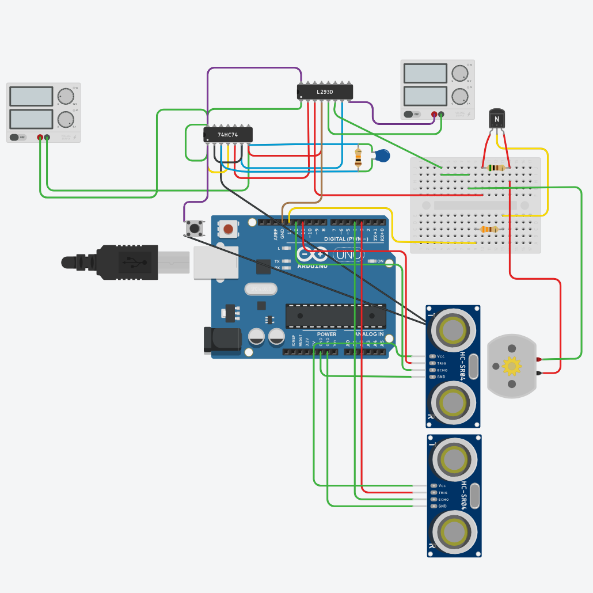
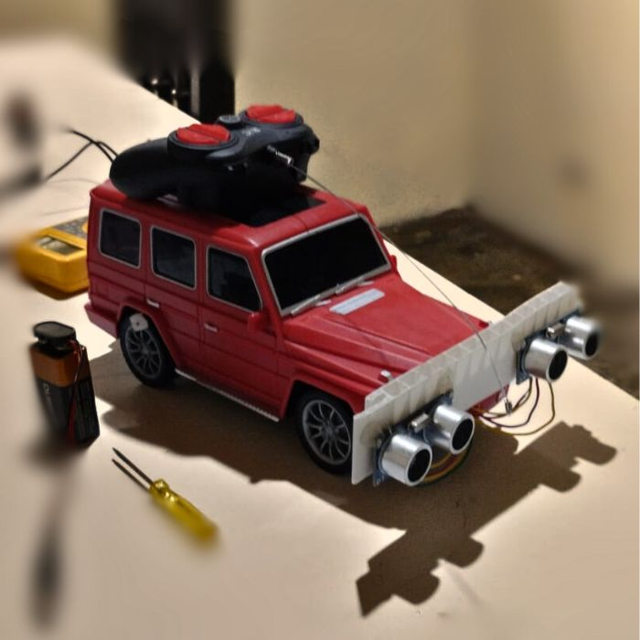

Este proyecto implementa un sistema robusto de detección de distancia utilizando dos sensores ultrasónicos HC-SR04 en un Arduino UNO. El objetivo es activar un sistema "Boost" (simulado con un LED) solo cuando la detección es estable y confiable.
Para lograr esto en un microcontrolador con recursos limitados (2KB SRAM), se implementó un Filtro Kalman 1D optimizado para enteros, evitando el uso costoso de números de punto flotante.
Características Clave
- Optimización de
Memoria: Uso extensivo de
PROGMEMy tipos de datosuint8_t. - Filtro Kalman
Entero: Cálculos escalados (x10, x100) para
mantener precisión sin
float. - Redundancia: Fusión de datos de dos sensores para mayor fiabilidad.
- Estabilidad: Historial de estimaciones para evitar falsos positivos por ruido.
Montaje y Pruebas


Simulación
Pruébalo en Tinkercad
Accede al esquema interactivo, explora las conexiones y ejecuta el código en el simulador.
Código Fuente
A continuación se presenta el código completo optimizado para Arduino UNO.
// ============================================================
// SISTEMA OPTIMIZADO DE DETECCIÓN Y ACTIVACIÓN DE BOOST CON FILTRO KALMAN
// Para dos sensores HC-SR04 en Arduino UNO (16 MHz, 2 KB SRAM)
// Optimización: Memoria, Rendimiento y Determinismo Temporal
// ============================================================
#include <avr/pgmspace.h>
// — Definiciones de pines —
#define TRIG1 11
#define ECHO1 12
#define TRIG2 3
#define ECHO2 4
#define LED_PIN 2 // LED_BUILTIN es generalmente el pin 13
#define LED_INDICATOR A0
//#define DEBUG
// — Parámetros de distancia (en PROGMEM para ahorrar RAM) —
const PROGMEM uint8_t MIN_DIST = 2; // cm, mínimo útil
const PROGMEM uint8_t MAX_DIST = 112; // cm, máximo técnico fiable
const PROGMEM uint8_t SAFETY_MARGIN = 5; // cm (aumentado a 2 para mayor robustez)
const PROGMEM uint8_t DIFFUSE_ZONE_START = 60; // cm, inicio de zona difusa (simplificado)
const PROGMEM uint8_t DIFFUSE_ZONE_END = 69; // cm, fin de zona difusa
const PROGMEM uint8_t ACTIVATION_MIN = 70; // Mínimo para activar LED
// — Parámetros de tiempo (uso de uint16_t optimizado) —
const PROGMEM uint16_t READ_INTERVAL = 10; // ms entre lecturas (ajustable según necesidad)
const PROGMEM uint16_t LED_ON_DURATION = 4000; // ms LED encendido
const PROGMEM uint16_t LED_OFF_DURATION = 3000; // ms LED apagado
// — Estados del LED (codificación optimizada) —
#define LED_OFF 0
#define LED_ON 1
#define LED_WAIT_OFF 2
uint8_t currentLedState = LED_OFF;
// — Variables de tiempo (se mantienen como unsigned long para evitar overflow) —
unsigned long previousReadMillis = 0;
unsigned long ledStartMillis = 0;
// — Historial para estabilidad (optimizado para usar enteros) —
#define HISTORY_SIZE 5
uint8_t estimationHistory[HISTORY_SIZE] = {0}; // Cambiado a uint8_t
uint8_t historyIndex = 0;
// — Variables Kalman 1D (optimizadas) —
uint8_t kalman_x = 10; // estado inicial (cm) como entero
uint8_t kalman_p_x10 = 10; // incertidumbre inicial x10 para precisión sin flotantes
const uint8_t kalman_q0_x100 = 1; // ruido de proceso fijo x100 (0.01)
uint8_t kalman_q_x100 = 1;
uint8_t kalman_r1_x10 = 5; // ruido medición sensor 1 x10 (0.5)
uint8_t kalman_r2_x10 = 5; // ruido medición sensor 2 x10 (0.5)
// — Umbrales pre-calculados para optimizar comparaciones —
const uint8_t SAFE_MAX_DIST = MAX_DIST - SAFETY_MARGIN; // 18 cm
const uint8_t STABLE_THRESHOLD_X10 = 2; // 0.2 * 10
const uint8_t UNCERT_THRESHOLD_X10 = 3; // 0.3 * 10
// — Factor para convertir duración a distancia (optimizado) —
// Original: duration * 0.0343 / 2.0
// Simplificado a: duration / 58 (estándar para HC-SR04 en cm)
#define DURATION_TO_CM_DIVISOR 58
// — Tiempo máximo de espera para echo en microsegundos —
// 25000 μs corresponde a ~4.3m (máximo teórico HC-SR04)
#define ECHO_TIMEOUT 25000
// — Declaraciones de funciones —
uint8_t read_distance(uint8_t trigPin, uint8_t echoPin);
uint8_t update_kalman(uint8_t z1, uint8_t z2);
uint8_t calculate_history_variation();
void setup() {
// Configuración de pines optimizada (escritura directa a registros)
pinMode(TRIG1, OUTPUT);
pinMode(ECHO1, INPUT);
pinMode(TRIG2, OUTPUT);
pinMode(ECHO2, INPUT);
pinMode(LED_PIN, OUTPUT);
pinMode(LED_INDICATOR, OUTPUT);
digitalWrite(LED_PIN, LOW);
digitalWrite(LED_INDICATOR, LOW);
#ifdef DEBUG
Serial.begin(9600);
Serial.println(F("SISTEMA INICIADO - OPTIMIZADO"));
#endif
}
void loop() {
unsigned long now = millis();
// — Lectura y filtro cada READ_INTERVAL ms —
if (now - previousReadMillis >= READ_INTERVAL) {
previousReadMillis = now;
// Lecturas de sensores (optimizadas)
uint8_t z1 = read_distance(TRIG1, ECHO1);
uint8_t z2 = read_distance(TRIG2, ECHO2);
// Actualización Kalman y registro histórico (en enteros)
uint8_t estimate = update_kalman(z1, z2);
estimationHistory[historyIndex] = estimate;
historyIndex = (historyIndex + 1) % HISTORY_SIZE;
// Calcular variación histórica (optimizada para enteros)
uint8_t variation = calculate_history_variation();
#ifdef DEBUG
Serial.print(F("z1:")); Serial.print(z1);
Serial.print(F(" z2:")); Serial.print(z2);
Serial.print(F(" K:")); Serial.print(estimate);
Serial.print(F(" P:")); Serial.print(kalman_p_x10);
Serial.print(F(" V:")); Serial.print(variation);
#endif
// — Condiciones de activación (optimizadas) —
bool allValid = true;
for (uint8_t i = 0; i < HISTORY_SIZE; i++) {
if (estimationHistory[i] > SAFE_MAX_DIST) {
allValid = false;
break;
}
}
// Evaluación de estabilidad y certidumbre (optimizada)
bool stable = (variation <= STABLE_THRESHOLD_X10);
bool lowUncert = (kalman_p_x10 < UNCERT_THRESHOLD_X10);
// Lógica de activación (simplificada y optimizada)
// if (estimate >= MIN_DIST && estimate <= SAFE_MAX_DIST &&
if (estimate >= ACTIVATION_MIN && estimate <= SAFE_MAX_DIST &&
allValid && stable && lowUncert &&
currentLedState == LED_OFF) {
// Verificación adicional con al menos una lectura válida
if ((z1 > 0 && z1 <= SAFE_MAX_DIST) || (z2 > 0 && z2 <= SAFE_MAX_DIST)) {
#ifdef DEBUG
Serial.println(F(" -> ACTIVANDO"));
#endif
digitalWrite(LED_PIN, HIGH);
digitalWrite(LED_INDICATOR, HIGH);
currentLedState = LED_ON;
ledStartMillis = now;
}
}
#ifdef DEBUG
else {
// Mensajes de depuración omitidos en versión de producción
if (estimate > SAFE_MAX_DIST)
Serial.println(F(" -> FUERA RANGO"));
else if (!allValid)
Serial.println(F(" -> HIST NO VALIDO"));
else if (!stable)
Serial.println(F(" -> INESTABLE"));
else if (!lowUncert)
Serial.println(F(" -> INCERTIDUMBRE"));
else if (currentLedState != LED_OFF)
Serial.println(F(" -> EN CICLO"));
else
Serial.println(F(" -> BAJO RANGO"));
}
if (z1 == 0 && z2 == 0) {
Serial.println(F(" -> SIN LECTURA"));
}
#endif
}
// — Control ciclo LED (optimizado) —
if (currentLedState == LED_ON && now - ledStartMillis >= LED_ON_DURATION) {
digitalWrite(LED_PIN, LOW);
digitalWrite(LED_INDICATOR, LOW);
currentLedState = LED_WAIT_OFF;
ledStartMillis = now;
#ifdef DEBUG
Serial.println(F("LED OFF - ESPERA"));
#endif
}
else if (currentLedState == LED_WAIT_OFF && now - ledStartMillis >= LED_OFF_DURATION) {
currentLedState = LED_OFF;
#ifdef DEBUG
Serial.println(F("LISTO NUEVA ACTIVACION"));
#endif
}
}
// -------------------- Funciones Auxiliares (Optimizadas) --------------------
// Función de lectura de distancia optimizada para enteros
uint8_t read_distance(uint8_t trigPin, uint8_t echoPin) {
// Secuencia de disparo optimizada
digitalWrite(trigPin, LOW);
delayMicroseconds(2);
digitalWrite(trigPin, HIGH);
delayMicroseconds(10);
digitalWrite(trigPin, LOW);
// Lectura de duración con timeout
unsigned long duration = pulseIn(echoPin, HIGH, ECHO_TIMEOUT);
// Validación y conversión a distancia (en cm)
if (duration == 0) return 0; // Sin eco válido
// Conversión optimizada a centímetros (uint8_t)
uint8_t d = duration / DURATION_TO_CM_DIVISOR;
// Detección de zona difusa (optimizada)
if (d > DIFFUSE_ZONE_START && d < DIFFUSE_ZONE_END) {
#ifdef DEBUG
Serial.print(F("DIFUSA:")); Serial.println(d);
#endif
return MAX_DIST + 1; // Fuera de rango
}
// Restricción a rango útil
if (d < MIN_DIST) return MIN_DIST;
if (d > MAX_DIST) return MAX_DIST;
return d;
}
// Filtro Kalman optimizado para enteros con escalado para mantener precisión
uint8_t update_kalman(uint8_t z1, uint8_t z2) {
// — Predicción (trabajando con valores escalados) —
kalman_p_x10 += (kalman_q_x100 / 10); // q_x100/10 para mantener escala x10
// — Actualización con z1 (si válido) —
if (z1 > 0) {
// Cálculo de ganancia Kalman optimizado
uint16_t denominator = kalman_p_x10 + kalman_r1_x10;
uint8_t k_x10 = (denominator > 0) ? ((10 * kalman_p_x10) / denominator) : 0;
// Actualización de estado optimizada para evitar desbordamiento
int16_t innovation = ((int16_t)z1 - (int16_t)kalman_x);
kalman_x += (k_x10 * innovation) / 10;
// Actualización de covarianza optimizada
kalman_p_x10 = (kalman_p_x10 * (10 - k_x10)) / 10;
}
// — Actualización con z2 (si válido) —
if (z2 > 0) {
// Mismo proceso para z2
uint16_t denominator = kalman_p_x10 + kalman_r2_x10;
uint8_t k_x10 = (denominator > 0) ? ((10 * kalman_p_x10) / denominator) : 0;
int16_t innovation = ((int16_t)z2 - (int16_t)kalman_x);
kalman_x += (k_x10 * innovation) / 10;
kalman_p_x10 = (kalman_p_x10 * (10 - k_x10)) / 10;
}
// — Ajuste dinámico de ruido de medición (simplificado y optimizado) —
if (z1 > 0 && z2 > 0) {
uint8_t diff = (z1 > z2) ? (z1 - z2) : (z2 - z1);
if (diff > 1) {
// Aumentar ruido (sensores discrepan)
if (kalman_r1_x10 < 20) kalman_r1_x10++; // Máximo 2.0
if (kalman_r2_x10 < 20) kalman_r2_x10++;
} else {
// Disminuir ruido (sensores concuerdan)
if (kalman_r1_x10 > 1) kalman_r1_x10--; // Mínimo 0.1
if (kalman_r2_x10 > 1) kalman_r2_x10--;
}
}
// — Restricción del estado estimado —
if (kalman_x < MIN_DIST) kalman_x = MIN_DIST;
if (kalman_x > MAX_DIST) kalman_x = MAX_DIST;
// — Reset q —
kalman_q_x100 = kalman_q0_x100;
return kalman_x;
}
// Cálculo de variación en historial optimizado para enteros
uint8_t calculate_history_variation() {
uint8_t max_val = 0, min_val = 255;
for (uint8_t i = 0; i < HISTORY_SIZE; i++) {
uint8_t val = estimationHistory[i];
if (val == 0) continue; // Ignorar valores no inicializados
if (val > max_val) max_val = val;
if (val < min_val) min_val = val;
}
return (min_val == 255) ? 0 : (max_val - min_val);
}